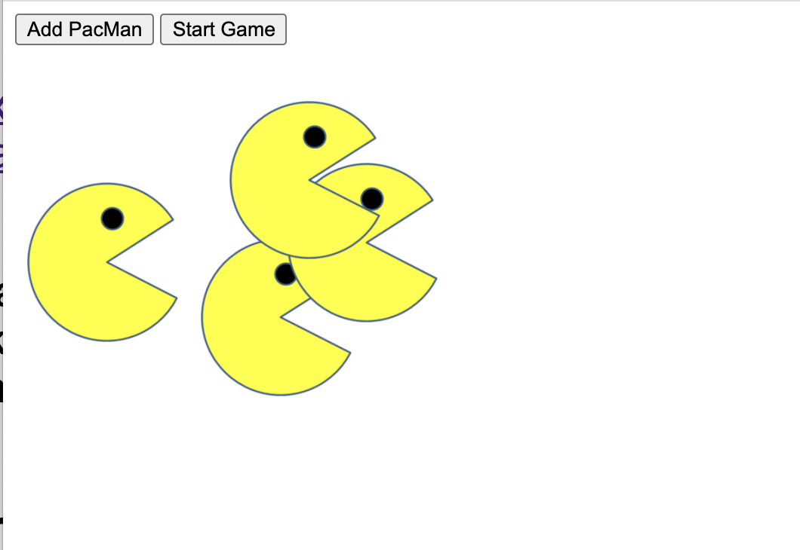
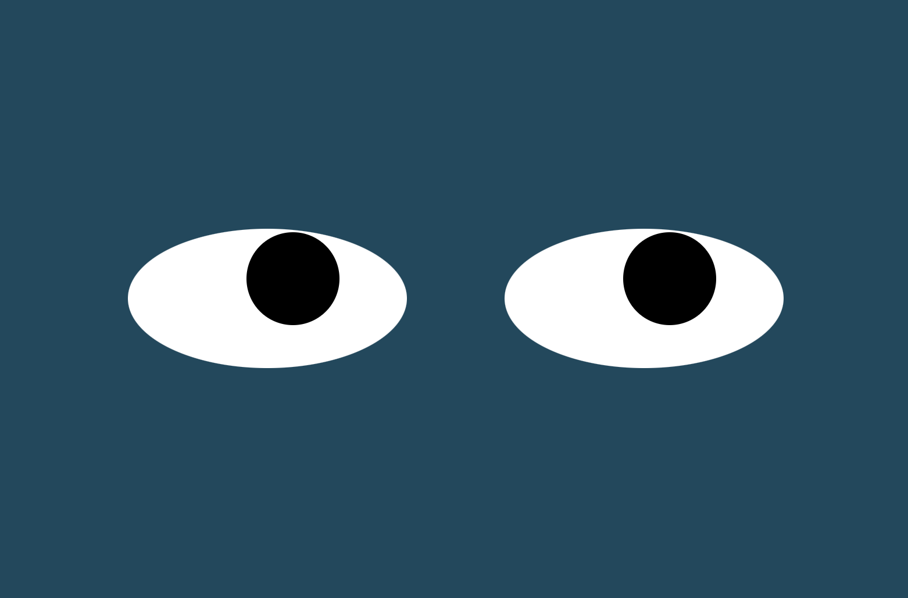
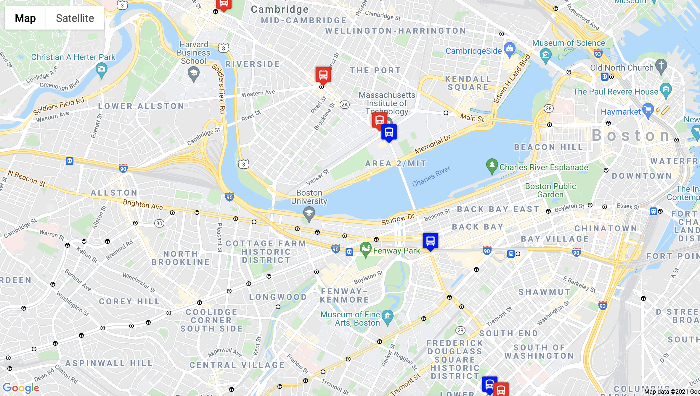

PacMan Exercise

This creates a web page that can make a new PacMan at a random position with each button click. When the game is started, the PacMan will move around the page at a random velocity.
See it in action
GitHub repository
Eye Movement Exercise

This creates a web page with two eyes that follow the mouse movement. Both eyes are synchronized so that it looks like a person following the mouse.
See it in action
GitHub repository
Real Time Bus Tracking Project

This creates a web page animation that displays a map which will track the active buses on the MBTA Route 1 in real-time.
See it in action
GitHub repository